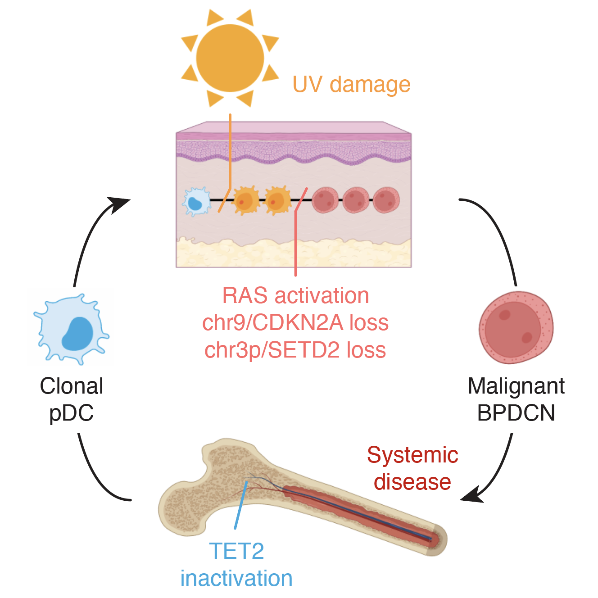
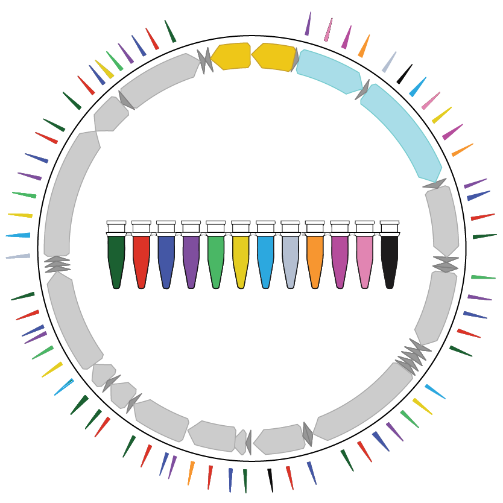
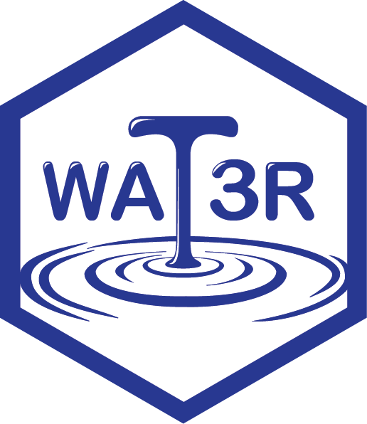
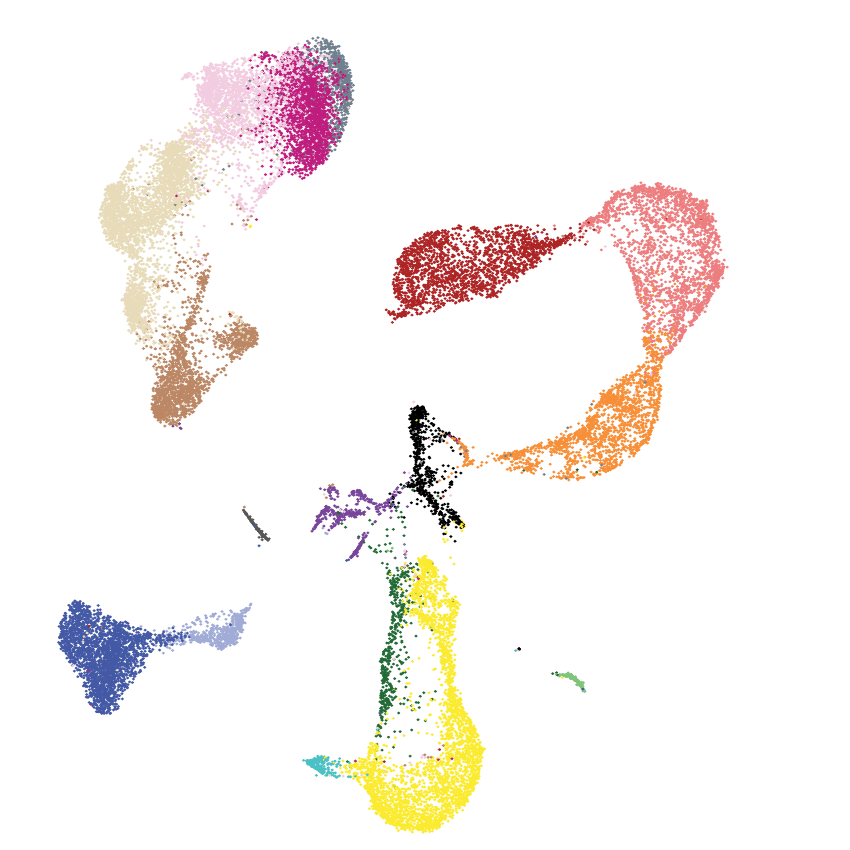
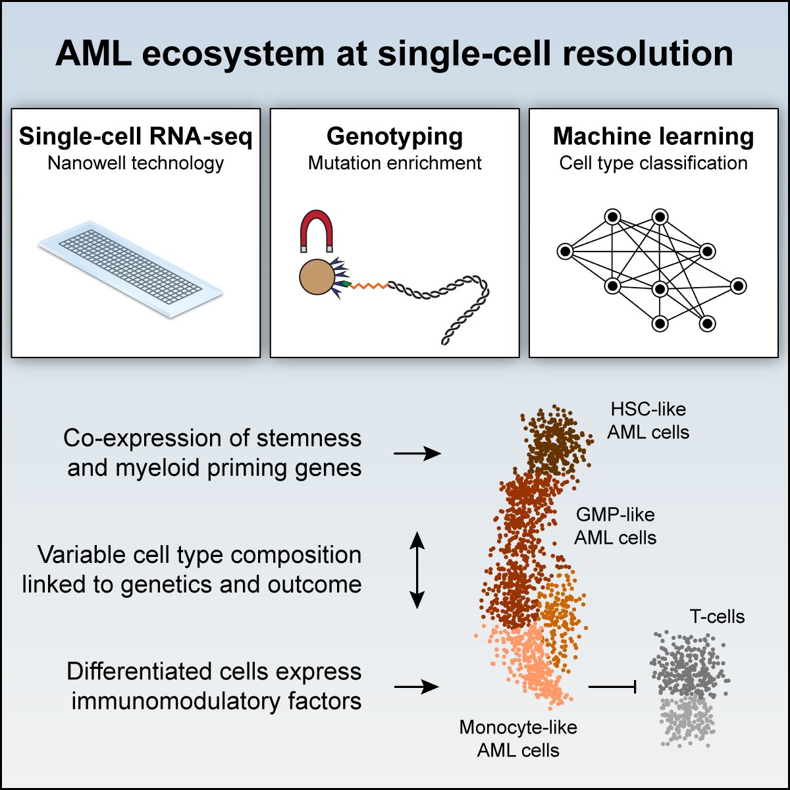
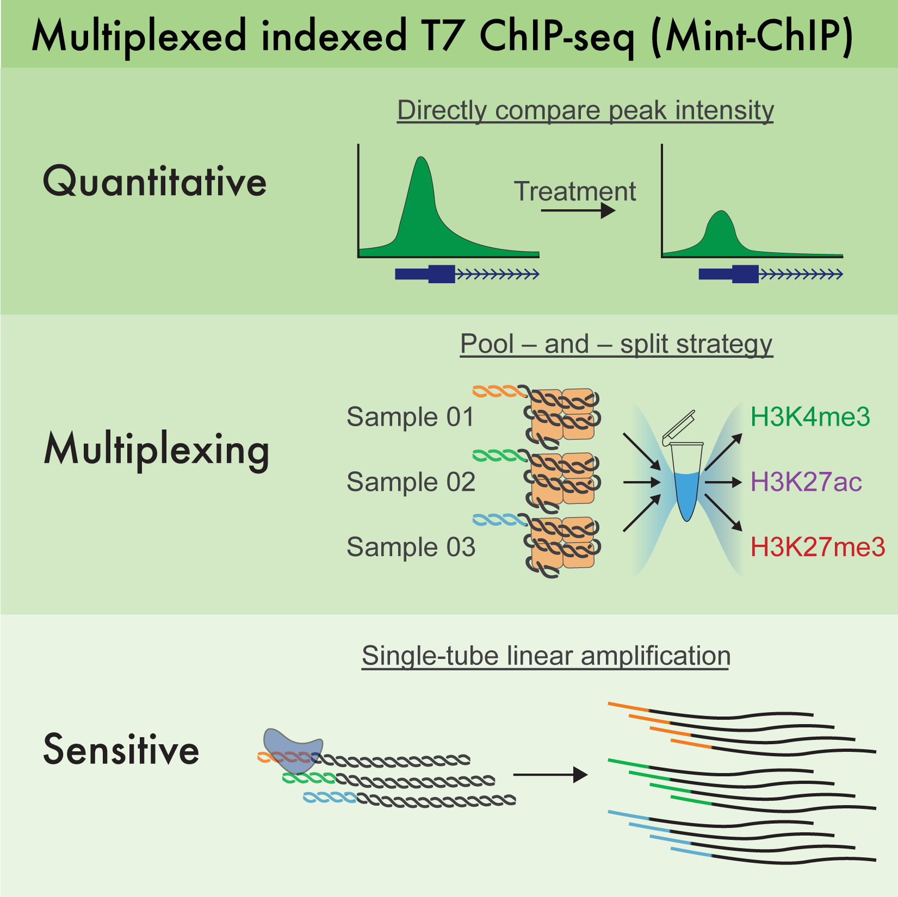
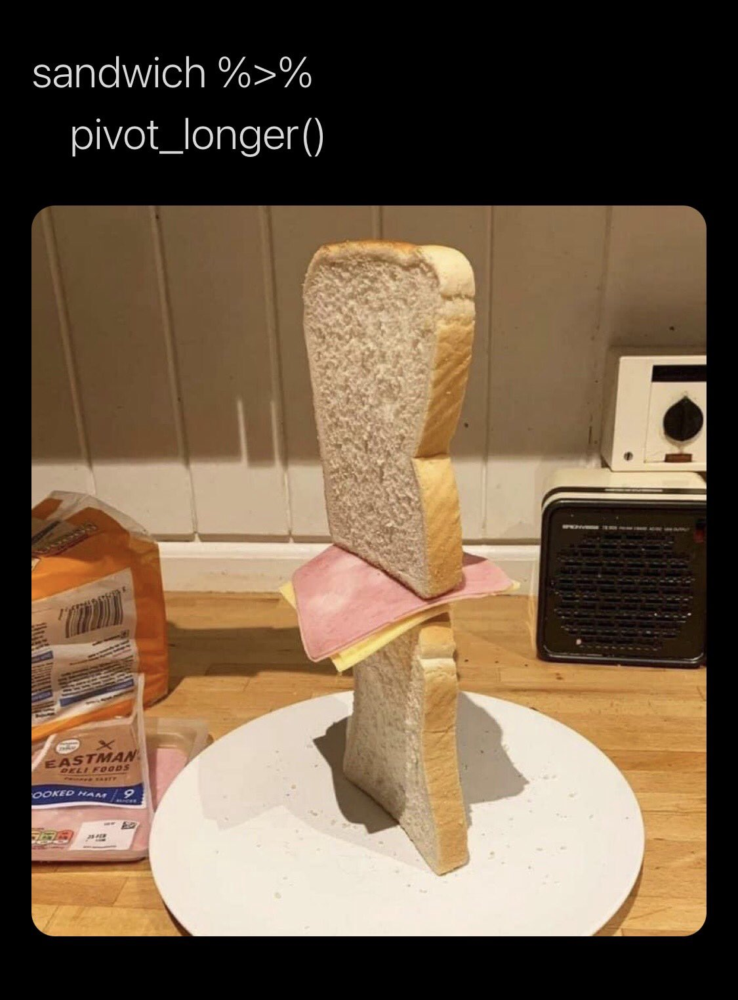

| Plasmid | Gene/Insert | Description | Reference |
|---|---|---|---|
| pSMALB-ATF4.5 | ATF4 5’ UTR, ATF4-eGFP fusion ORF, TagBFP | ATF4 reporter | van Galen P, Kreso A, Mbong N, et al. The unfolded protein response governs integrity of the haematopoietic stem-cell pool during stress. Nature, 2014. |
| pSMALB-ATF4.12 | ATF4 5’ UTR, ATF4-eGFP fusion ORF, TagBFP | ATF4 reporter (negative control) | van Galen P, Kreso A, Mbong N, et al. The unfolded protein response governs integrity of the haematopoietic stem-cell pool during stress. Nature, 2014. |
| pSMALB-ATF4.14 | ATF4 5’ UTR, ATF4-eGFP fusion ORF, TagBFP | ATF4 reporter (positive control) | van Galen P, Kreso A, Mbong N, et al. The unfolded protein response governs integrity of the haematopoietic stem-cell pool during stress. Nature, 2014. |
| pMAL | Gateway cloning element | Bidirectional expression vector (pPGK promoter, GFP) | van Galen P, Kreso A, Wienholds E, et al. Reduced lymphoid lineage priming promotes human hematopoietic stem cell expansion. Cell Stem Cell, 2014. |
| pMALB | Gateway cloning element | Bidirectional expression vector (hPGK promoter, TagBFP) | van Galen P, Kreso A, Wienholds E, et al. Reduced lymphoid lineage priming promotes human hematopoietic stem cell expansion. Cell Stem Cell, 2014. |
| pSMAL | Gateway cloning element | Bidirectional expression vector (SFFV promoter, GFP) | van Galen P, Kreso A, Wienholds E, et al. Reduced lymphoid lineage priming promotes human hematopoietic stem cell expansion. Cell Stem Cell, 2014. |
| pSMALB | Gateway cloning element | Bidirectional expression vector (SFFV promoter, TagBFP) | van Galen P, Kreso A, Wienholds E, et al. Reduced lymphoid lineage priming promotes human hematopoietic stem cell expansion. Cell Stem Cell, 2014. |
Data and Analysis
BPDCN EVOLUTION

2023 | How pre-leukemic cells in the bone marrow can evolve to a full-blown dendritic cell leukemia after acquiring DNA mutations in the skin.
- Paper: Griffin GK et al. Ultraviolet radiation shapes dendritic cell leukaemia transformation in the skin. Nature, 2023
- Single-cell_BPDCN: R scripts to analyze the single-cell gene expression and genotyping data.
- GEO: Raw and processed sequencing data.
MAESTER

2022 | How mitochondrial DNA mutations can be used to determine the clonal relationships between single cells.
- Paper: Miller TE et al. Mitochondrial variant enrichment from high-throughput single-cell RNA sequencing resolves clonal populations. Nat Biotechnol, 2022
- MAESTER-2021: Scripts used to analyze the data and generate figures.
- maegatk: Mitochondrial Alteration Enrichment and Genome Analysis Toolkit to process
.bamfiles with mitochondrial reads to generate heteroplasmy estimation in single cells. - Mitochondrial_variants: A table of mitochondrial variants, their effects on the resultant proteins, and the potential beneficial/detrimental consequences of mutations.
- GEO: Raw and processed sequencing data.
WAT3R

2022 | Recovering T cell receptors (TCRs) from 3’ single-cell RNA-sequencing.
- Paper: Ainciburu M et al. WAT3R: recovery of T-cell receptor variable regions from 3’ single-cell RNA-sequencing. Bioinformatics, 2022
- WAT3R: Pipeline to process data generated by the protocol T-cell Receptor Enrichment to linK clonotypes by sequencing (TREK-seq).
- Docker: Image to run the pipeline
- GEO: Raw and processed single-cell RNA and TCR-seq sequencing data.
T CELLS IN BPDCN

2022 | Here we explore the mechanisms of immune dysfuction in a rare dendritic cell leukemia.
- Paper: DePasquale EAK et al. Single-cell multiomics reveals clonal T-cell expansions and exhaustion in blastic plasmacytoid dendritic cell neoplasm. Front Immunol, 2022
- BPDCN: Scripts used to analyze the data and generate figures for the paper.
- GEO: Raw and processed single-cell RNA and TCR-seq sequencing data.
SINGLE-CELL AML

2019 | Analysis of acute myeloid leukemia cell heterogeneity.
- Paper: van Galen P et al. Single-cell RNA-seq reveals AML hierarchies relevant to disease progression and immunity. Cell, 2019
- aml2019: Original code largely written by Volker Hovestadt.
- reanalyze-AML2019: Scripts that facilitate the visualization of genes of interest in barplots, violin/sina plots, and heatmaps.
- GEO: Raw and processed single-cell RNA and TCR-seq sequencing data.
MINT-CHIP

Addgene Plasmids
See also Addgene website
For Trainees
- Brigham and Women’s Postdoctoral Association for postdocs
- Harvard’s Bioinformatics and Integrative Genomics PhD Program for PhD students
- Harvard’s Biological and Biomedical Sciences (BBS) Program for PhD students
- Harvard’s Biomedical Informatics Program for MSc students
- Dana-Farber/Harvard Cancer Center’s Continuing Umbrella of Research Experiences (CURE) Program for student internships
- Brigham and Women’s Student Success Jobs Program for student internships
Learning
R for Statistical Computing

- R for Data Science (book)
- TidyTuesday (videos)
- ComplexHeatmap (documentation)
Python
Bash
- O’Reilly – Bash Scripting and Shell Programming (videos)
Other sources
- Bioinformatics Resources Compendium (by Merle Riedemann)
- Harvard Chan Bioinformatics Core (Workshops)
- Ming Tang Genomics (Github)
- 10 Git Commands Every Developer Should Know (article)
Cell Type Annotation
Packages for automated cell type annotation.